In this exercise, you will recreate a labour market analysis by the ONS, reported in the table EARN04: Gross weekly earnings of full-time employees [last accessed 21/02/2025]. Currently, this table is updated four times a year in February, May, August and November using data from the Quarterly Labour Force Survey.
Learning outcomes:
- To understand better how ONS earnings statistics are produced
- To become more familiar with key variables from the QLFS
- To learn using income weights appropriately
Data
The data used in this exercise relates to an estimate published by the ONS for October-December 2024.
To follow the exercise, you need to access the relevant dataset from the UK Data Service: Quarterly Labour Force Survey, October - December, 2024.
Get set up
We suggest that you create a folder named LFS_exercises as the working directory for this exercise – where syntax files and other materials will be stored. After downloading the data, save it in an easily accessible location within LFS_exercises, such as a subfolder named Data.
Let’s open the QLFS dataset from the File menu:
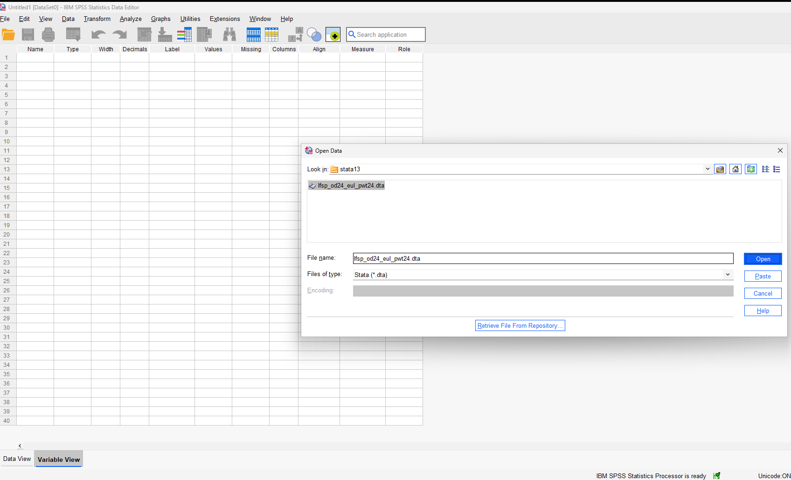
As previously, let’s just keep the variables we need for the exercise.
Examine the dataset
Let’s inspect the data and the new variables by looking at the variables and data view:
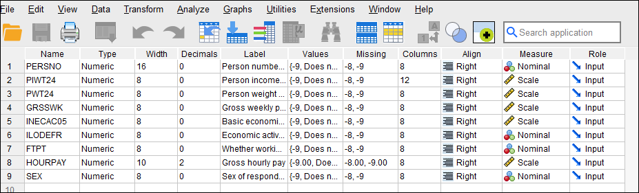
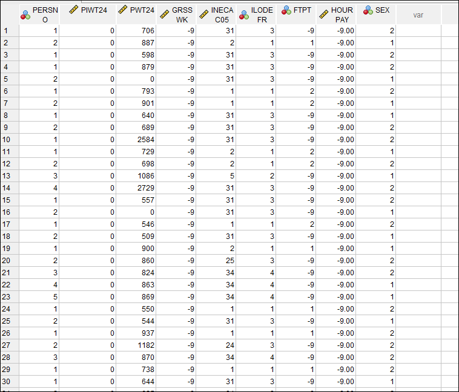
We can also examine the descriptive statistics of weekly earnings
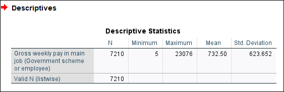
Let’s plot the distribution of weekly earnings using a histogram. Given that income data tends to be skewed to the right (a relatively small number of respondents have very large earnings), which reduces the visibility lower earnings, we will leaving out the 1% highest earners, that is respondents earning more than £2,500 per week.
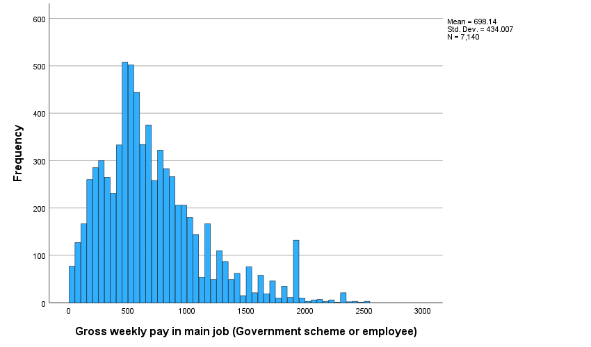
Examine full-time employees
It is important to remain mindful of definitions:
Employees refers to people who whose jobs implies working under an employment contract for an employer;
Employed refers to people who are both employees and self employed ie who have a paid job.
Full-time and part-time refer to people’s self declared working-time status, irrespective of whether they are employed or self-employed
The INECAC05 variable records all nuances of economic activity (there are 35 of them!), including employment and self-employment. There is also ILODEFR which records broader economic activity status (ie Whether employed, unemployed, or on a government training scheme etc.) and group together self-employed and employees.
We will now examine these variables.
First, economic activity…
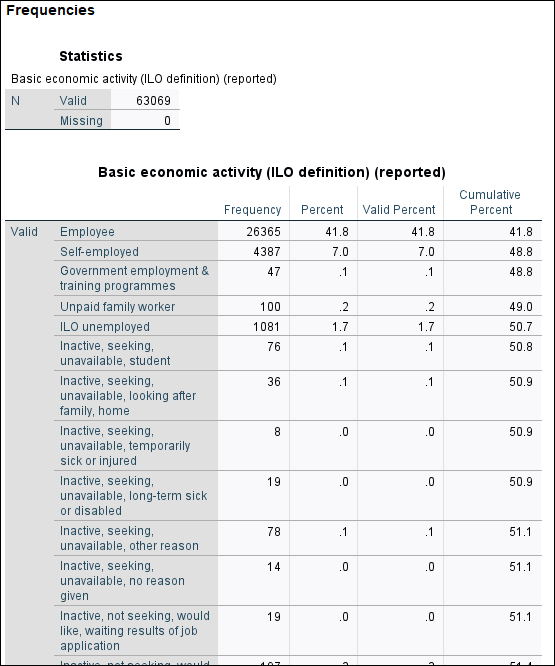
Then working-time status.
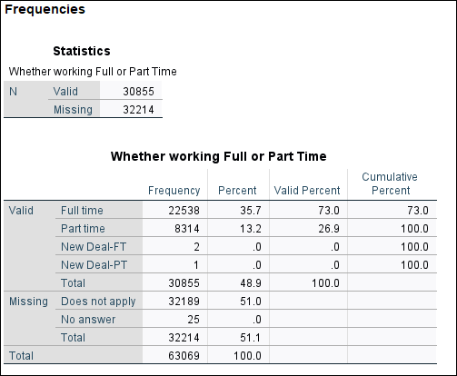
If we further want to know about about the number of employees by working-time status, we will need to explicitly restrict the analysis to those:
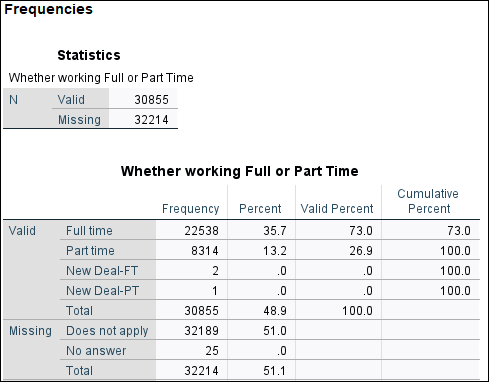
There are 19,680 full-time employees in the sample.
ONS estimates for employees’ gross weekly earnings
The code below recreates the ONS results showing the distribution of income for full-time employees overall and by gender. We do it in two stages:
First, we create a variable to match the ONS’ definition of full-time employees
It is always a good idea to double check the ONS definition in its publication. Looking at the notes under the Table EARN04, we learn that ONS figures are only computed for respondents’ main job, and also that those earnings more than £100 per hour are excluded.
* Creating the variable
COMPUTE ftEmp = 0.
IF (FTPT = 1 AND HOURPAY <= 100 AND INECAC05 = 1) ftEmp = 1.
* Defining and assigning value labels.
VARIABLE LABELS ftEmp "Whether a full-time employee - ONS definition".
VALUE LABELS ftEmp
0 "Anything else"
1 "Full-time employee".
* Inspecting the result
FREQUENCIES VARIABLES=ftEmp.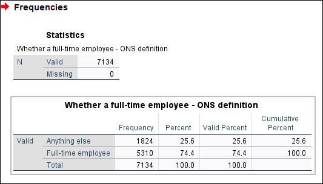
- We then compute the median earnings for full-timers matching the ONS definition:
* Applying weights
WEIGHT BY PIWT24.
* Selecting the subpopulation of employees
TEMPORARY.
SELECT IF (ftEmp = 1 & NOT MISSING(PIWT24 )).
EXECUTE.
* Getting the median
FREQUENCIES VARIABLES=GRSSWK
/FORMAT=NOTABLE
/STATISTICS=MEAN MEDIAN
/ORDER=ANALYSIS.
WEIGHT OFF.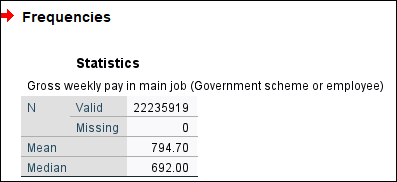
The median weekly earnings of full-time employees in the UK in October-December 2024 was £692. We need to keep in mind that by using the income weights PIWT, those with missing values on GRSSWK are automatically left out.
What are the median weekly earnings for men and women in the UK?
What are earnings at the lowest decile for males and females in the UK?
Why are we using a different weight from Exercise 1?
WEIGHT BY PIWT24.
TEMPORARY.
SELECT IF (ftEmp = 1 & NOT MISSING(PIWT24 )).
EXECUTE.
* 2. Apply weighting variable.
* 3. Request percentiles for GRSSWK.
FREQUENCIES VARIABLES=GRSSWK
/FORMAT=NOTABLE
/STATISTICS=MEAN MEDIAN
/ORDER=ANALYSIS.
WEIGHT OFF.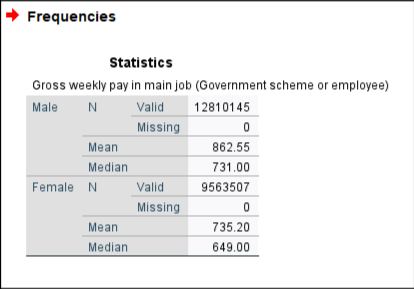
Median weekly earnings of women and men in the UK are respectively £650 and £731
WEIGHT BY PIWT24.
SORT CASES BY SEX.
SPLIT FILE BY SEX.
TEMPORARY.
SELECT IF (ftEmp = 1 & PIWT24>0 & NOT MISSING(PIWT24)).
* 10th percentile.
FREQUENCIES VARIABLES=GRSSWK
/FORMAT=NOTABLE
/PERCENTILES=10.0
/ORDER=ANALYSIS.
SPLIT FILE OFF.
WEIGHT OFF.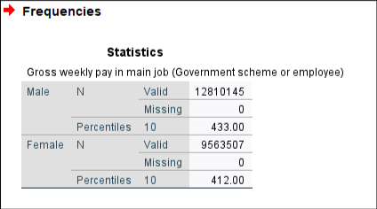
The median weekly earnings for men and women in the lowest decile in the UK are respectively £412 and £433
- Because earnings are computed for a specific subpopulation: those in employment with valid earnings data.
How many people work as full-time employee?
This question relies on a slightly different definition that we have used so far since this time we won’t exclude those earning more than £100 per hour. The figures published by the ONS can be found in the same table as previously.
Let’s follow the same steps as before:
- Let’s flag full-time employees (no limit on hourly pay this time):
Create the new Full-time flag
COMPUTE ftEmp2 = 0.
IF (FTPT = 1 AND INECAC05 = 1) ftEmp2 = 1.
VARIABLE LABELS ftEmp "Whether a full-time employee - general definition".
VALUE LABELS ftEmp2
0 "Anything else"
1 "Full-time employee (all)".
FREQUENCIES VARIABLES=ftEmp2.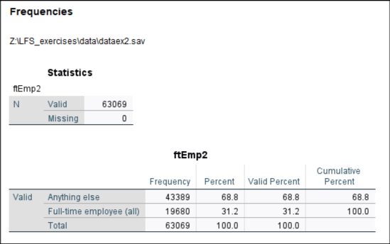
And finally, let’s produce estimates of their number in the population:
WEIGHT BY PIWT24.
TEMPORARY.
SELECT IF (PIWT24>0 & NOT MISSING(PIWT24)).
FREQUENCIES VARIABLES=ftEmp2
/ORDER=ANALYSIS.
WEIGHT OFF.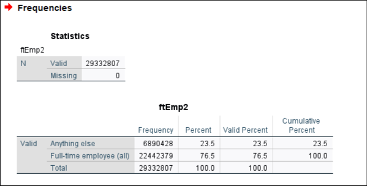
The ONS table gives the estimated number of full-time employees as 22,430,659. Above, we get 22,442,379. Why is there a difference?
What steps need to be different to get the correct estimate of the number of full-time employees?
What is the correct estimated number of:
- full-time employees;
- female and male full-time employees in the UK?
Because we have used the wrong weights ie PIWT24, the weights that can only be used for earnings estimation
We need to rerun the commands using the correct weighting variable: PWT24
* Apply weight.
WEIGHT BY PWT24.
TEMPORARY.
SELECT IF (PWT24>0 & NOT MISSING(PWT24)).
FREQUENCIES VARIABLES=ftEmp2
/ORDER=ANALYSIS.
WEIGHT OFF.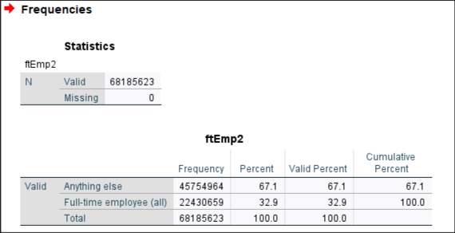
* Apply weight.
WEIGHT BY PWT24.
* Split output by SEX (1=Male, 2=Female).
SORT CASES BY SEX.
SPLIT FILE BY SEX.
TEMPORARY.
SELECT IF (PWT24>0 & NOT MISSING(PWT24)).
* Number of full-time employees by gender
FREQUENCIES VARIABLES=ftEmp2
/ORDER=ANALYSIS.
* Turn off split and weight afterward.
SPLIT FILE OFF.
WEIGHT OFF.
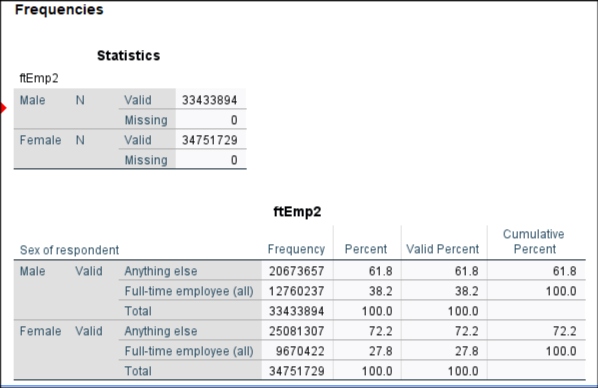
In October - December 2024, there were respectively 9,670,422 female and 12,760,237 male full-time employees.
What next?
See if you can examine earnings for temporary workers or another group of interest. Examine the full dataset and explore as you choose.
Move to the next exercise, which uses one of the LFS longitudinal datasets.